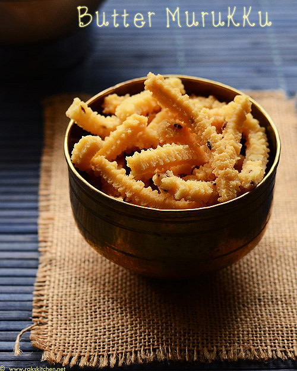

Murukku

Description
Murukku is a popular South Indian fried snack made with rice flour,
lentil flours, spices and seasonings. There are many types of murukku
recipes made in South Indian households. I share a basic murukku recipe
with plenty of troubleshooting tips and pointers making it easy for you
to make these crispy and crunch snack from scratch.
Ingriedents
- ¼ cup urad dal
- 1¼ cup rice flour (fine)
- 1 tbsp butter (softened)
- 1 tsp cumin / jeera
- pinch hing / asafoetida
- ¾ tsp salt
- water for kneading
- oil for frying
Steps
- firstly, take ¼ cup urad dal flour, 1¼ cup rice flour, 1 tbsp butter,
1 tsp cumin, pinch hing and ¾ tsp salt.
- combine and mix well making sure the butter is combined well.
- further, add water as required and knead a dough.
- now take 4 holed mould and fix to the chakli maker.
- grease the chakli maker with some oil. this prevents dough from sticking to mould.
- furthermore, make a cylindrical shape out of dough
and place the dough inside maker.
- tighten the lid and start preparing thenkuzhal murukku.
- on a greased spotted spoon, prepare small spiral shape murukku by pressing.
- seal the ends so that it doesn’t fall apart while deep frying.
- slide the murukku into hot oil. or bake in preheated oven at 180-degree
celsius for 15 minutes.
- flip the murukku and fry on medium flame till they turn crispy from both sides.
- furthermore, drain over a paper towel to remove excess oil.
- finally, serve crispy and tasty thenkuzhal murukku with masala tea or masala milk.
Back